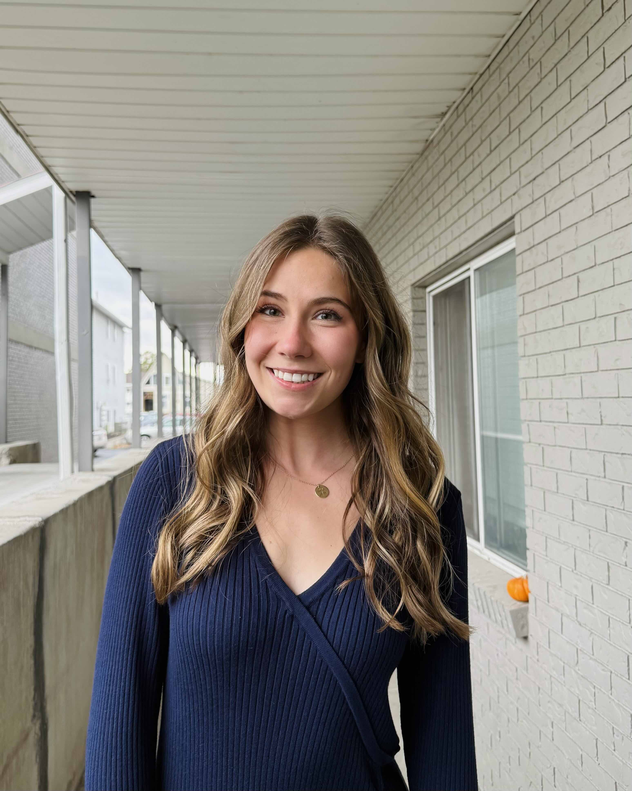

Welcome 👋
Welcome to my CSS portfolio. Here I showcase projects demonstrating modern layout techniques, theming systems, and responsive design.
Projects
Refactoring CSS
Transforming legacy styles into modern, maintainable CSS.
Typography Activity
Exploring font hierarchy, spacing, and readability.
Theming System
Reusable color tokens and design variables.
PostCSS Practice
Using modern CSS features with tooling enhancements.
Flexbox Article
Responsive layout using flexbox fundamentals.
Product Layout
Product card layout with flexible alignment.
Dashboard UI
Multi-panel interface using flexbox/grid.
Flexbox and Grid
description
Dashboard Grid
description
Magazine Grid
description
Portfolio Grid
description
Container Queries
description
Tailwind
Gospel page created with Tailwindcss. No template was used for this site as everything was done from scratch.
Visual Effects
Gospel page demonstrating visual effects such as transforms and shapes, gradients, blend modes, and filters. This page was made from scratch.